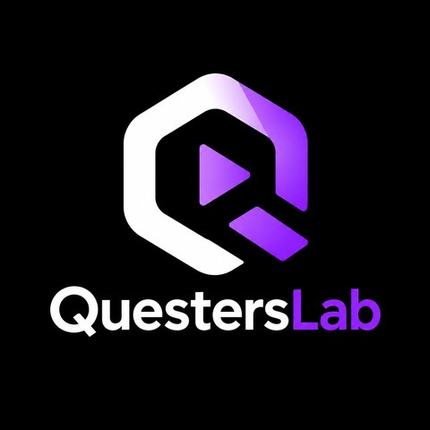
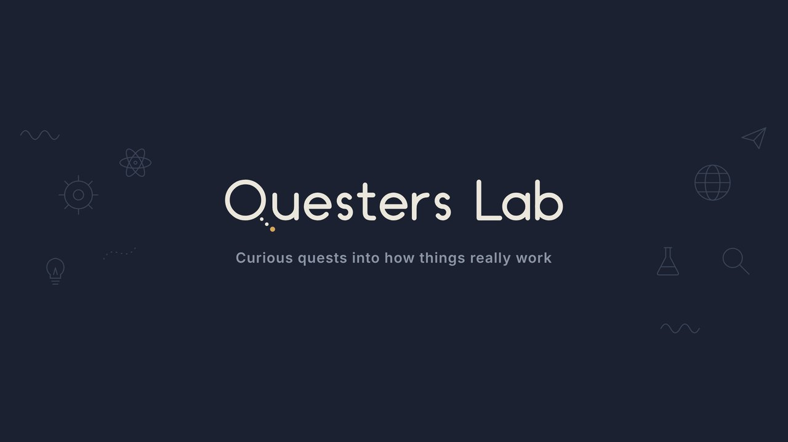
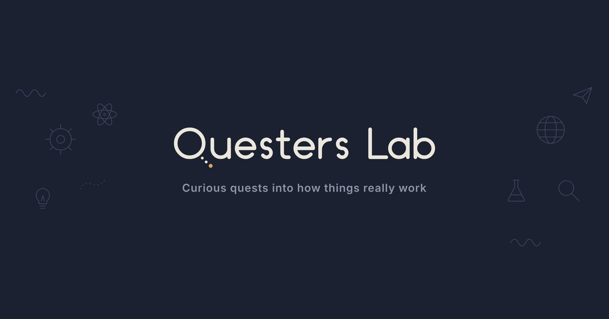

Questers Lab brand assets
Everything you need to show Questers Lab: logo, watermark, wordmark, banner, colours and fonts. Press and partners are welcome to use these to refer to the channel. Please don't change them or use them to suggest an endorsement.









A calm, muted palette
Videos, thumbnails and the banner use the first five. The logo keeps its own white and purple. Click a colour to copy it.
Two friendly, open fonts
Both are free under the SIL Open Font License.
Keep it simple
Do
- Give the logo room to breathe: at least the height of the play triangle on every side.
- Put the wordmark on slate or another dark, calm background.
- Use the files as they are, at any size the SVGs allow.
Don't
- Recolour, stretch, rotate or add effects to the logo or wordmark.
- Put the wordmark on busy photos or bright colours.
- Use the marks to suggest Questers Lab endorses a product.